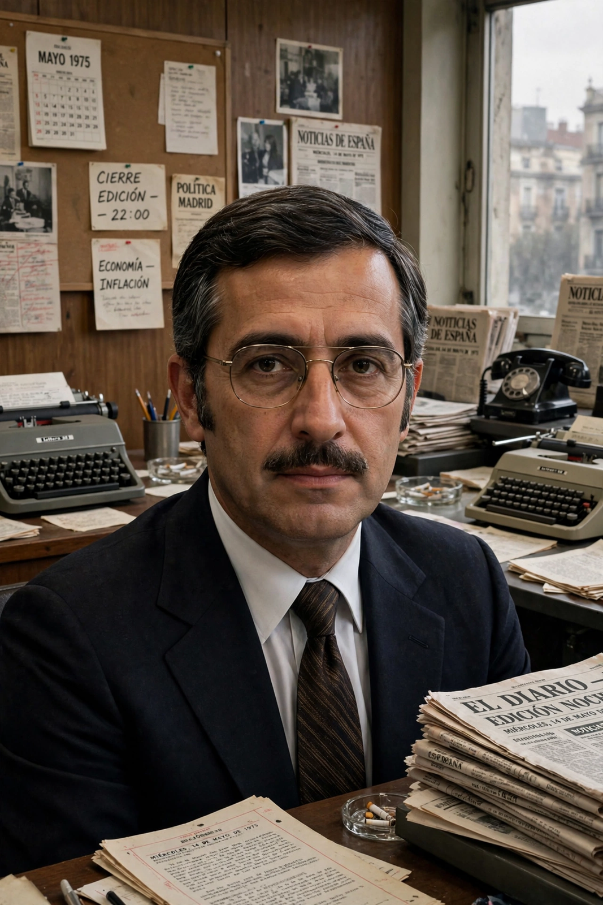

| Juan Luis Cebrián | |
|---|---|
 | |
| Born | 30 October 1944, Madrid, Spain |
| Nationality | Spanish |
| Occupation | Journalist, writer, media executive |
| Known for | Founding editor of El País; CEO and chair of PRISA |
Juan Luis Cebrián Echarri (born 30 October 1944) is a Spanish journalist, writer and media executive. He was the founding editor of the newspaper El País in 1976 and went on to lead the PRISA media group, which grew from the paper into Spain's largest media conglomerate, encompassing the Cadena SER radio network and the Santillana publishing house.
Cebrián studied philosophy and journalism in Madrid. By his late twenties he was deputy editor of the Madrid daily Informaciones and briefly directed news at Spanish state television. In 1976, months after the death of Francisco Franco, he became the first editor of El País, which under his direction became Spain's newspaper of reference and a central voice of the democratic transition. The paper's stance during the attempted coup of 23 February 1981, when it published special editions defending the constitution, cemented its reputation.
In 1988 Cebrián moved to executive leadership of PRISA, serving as chief executive and later executive chairman, overseeing expansion into Latin America, pay television (Canal+) and education publishing. He stepped down as chairman in 2018. He is a member of the Royal Spanish Academy, elected in 1996, and has written novels, essays and a memoir of the transition years.